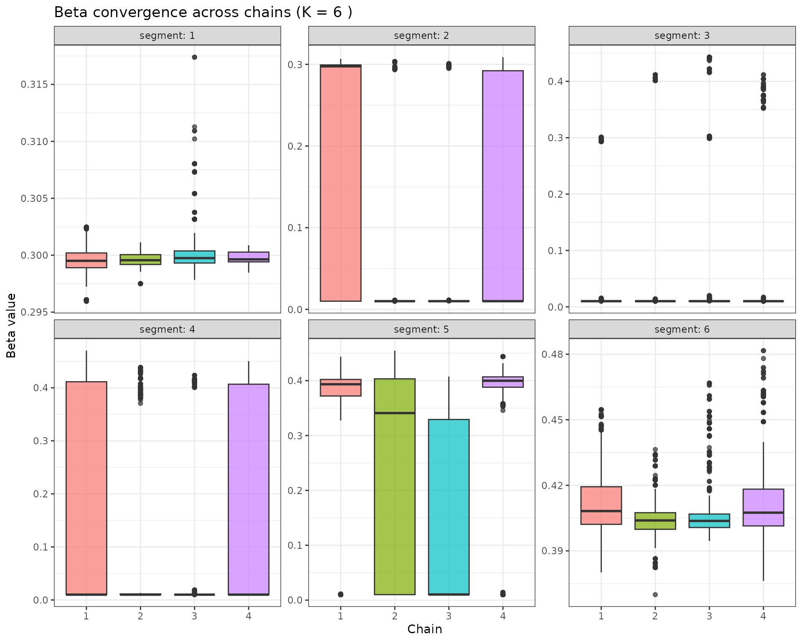
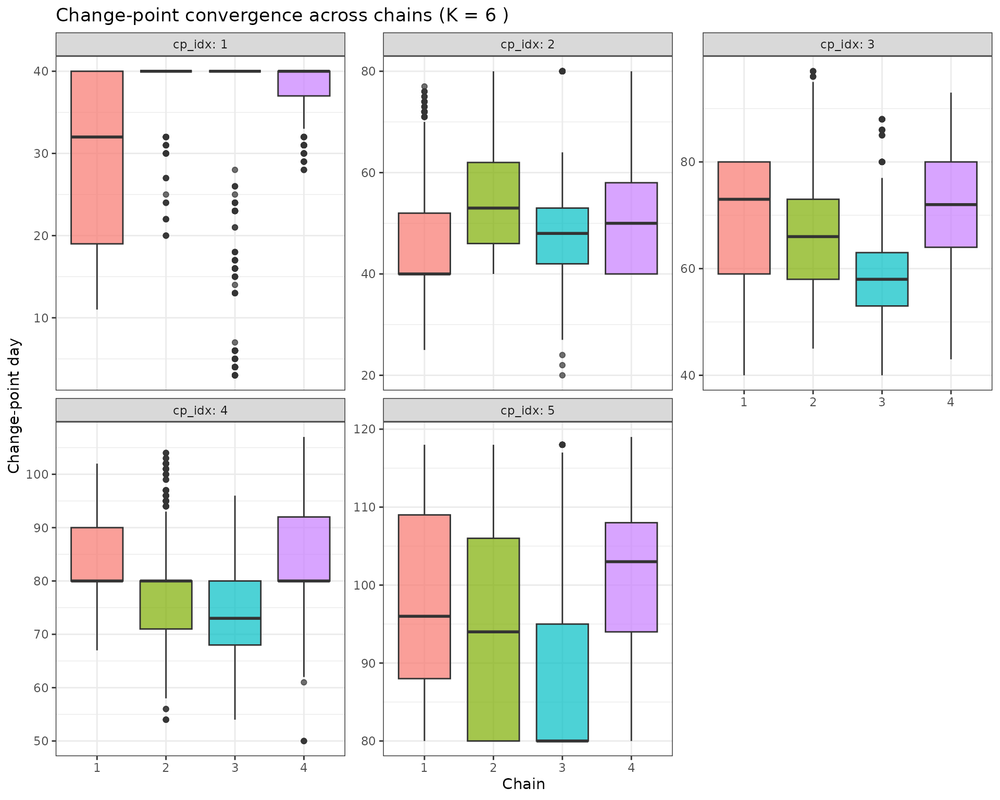

Example 2: SEIR change-point attack rate
David Hodgson
2025-09-30
Ex2_seir_attack_rate.RmdThis vignette demonstrates using RJMCMC to infer a piecewise-constant attack/transmission rate (change-point analysis) in a simple SEIR model from simulated incidence data.
- The time-varying transmission rate is modeled as a step function with an unknown number of segments and unknown change-points.
- RJMCMC explores the model dimension by proposing birth/death moves on the number of segments, and random-walk updates to segment-specific values.
- We show recovery of both the number and locations of change-points and the underlying incidence curve.
Note: All safety checks and validation functions have been extracted to separate R files to make this vignette more concise and maintainable. When running this vignette interactively, these functions will be automatically loaded. For pkgdown builds, the functions are already available through the package.
1. Packages
library(devtools)
devtools::load_all()
library(dplyr)
library(tidyr)
library(purrr)
library(ggplot2)
library(tidybayes)
library(ggdist)
# Load safety check functions (only when running interactively)
# These functions provide comprehensive input validation and safe defaults
# See R/safety_check_Ex2.R for full documentation
# Note: In pkgdown builds, these functions are available through the package
if (interactive()) {
source("R/safety_check_Ex2.R")
# Load corrected birth and death functions
# These functions match the thesis exactly and include proper dimension checks
source("R/corrected_birth_death.R")
# Load simple and robust birth/death functions
# These are much simpler and more standard implementations
source("R/simple_birth_death.R")
}
# Using more than one core might fail on windows
aaa_mc_cores <- if (.Platform$OS.type == "windows") 1 else 22. Simulate SEIR with piecewise-constant transmission rate
We simulate a discrete-time SEIR model (day step) with a piecewise-constant and normal observation noise on daily incidence.
- Population:
- Latent period: 1/ = 4 days
- Infectious period: 1/ = 6 days
- Change-points at days 40 and 80 with segment values: 0.30, 0.01, 0.40
# Helper to expand piecewise-constant beta from segment endpoints
make_beta_t <- function(beta_vec, cp_vec, T) {
# Use safety check functions
if (!validate_make_beta_t_inputs(beta_vec, cp_vec, T)) {
return(create_safe_beta(T))
}
# Ensure change-points are within bounds and ordered
ends <- pmin(pmax(round(cp_vec), 1), T)
ends[length(ends)] <- T
starts <- c(1, head(ends, -1) + 1)
# Initialize output vector
beta_t <- rep(0.1, T)
# Fill in segment values
for (k in seq_along(beta_vec)) {
if (k <= length(starts) && k <= length(ends)) {
start_idx <- starts[k]
end_idx <- ends[k]
if (is.finite(start_idx) && is.finite(end_idx) &&
start_idx >= 1 && end_idx <= T && start_idx <= end_idx) {
idx <- start_idx:end_idx
if (length(idx) > 0) {
beta_t[idx] <- beta_vec[k]
}
}
}
}
# Final safety check
if (any(!is.finite(beta_t)) || any(beta_t <= 0)) {
return(create_safe_beta(T))
}
beta_t
}
# Deterministic SEIR forward solver for expected incidence
seir_expected_incidence <- function(T, N, beta_t, gamma, S0, E0, I0, R0, rho = 1.0) {
# Use safety check functions
if (!validate_seir_inputs(T, N, beta_t, gamma, S0, E0, I0, R0, rho)) {
return(create_safe_seir_result(1))
}
# Initialize arrays
S <- numeric(T); E <- numeric(T); I <- numeric(T); R <- numeric(T)
inc <- numeric(T)
# Set initial conditions
S[1] <- max(0, S0); E[1] <- max(0, E0); I[1] <- max(0, I0); R[1] <- max(0, R0)
# Forward simulation
for (t in 1:T) {
# Safety check for current state
if (!is.finite(S[t]) || !is.finite(E[t]) || !is.finite(I[t]) || !is.finite(R[t])) {
S[t] <- max(0, S0); E[t] <- max(0, E0); I[t] <- max(0, I0); R[t] <- max(0, R0)
}
# Calculate transmission rate
lambda <- beta_t[t] * I[t] / N
if (!is.finite(lambda) || lambda < 0) lambda <- 0
# Calculate transitions
new_inf <- lambda * S[t]
new_E_to_I <- gamma * E[t]
new_I_to_R <- gamma * I[t]
# Safety checks for transitions
if (!is.finite(new_inf) || new_inf < 0) new_inf <- 0
if (!is.finite(new_E_to_I) || new_E_to_I < 0) new_E_to_I <- 0
if (!is.finite(new_I_to_R) || new_I_to_R < 0) new_I_to_R <- 0
# Record incidence
inc[t] <- rho * new_inf
if (!is.finite(inc[t]) || inc[t] < 0) inc[t] <- 0
# Update states for next time step
if (t < T) {
S[t + 1] <- max(S[t] - new_inf, 0)
E[t + 1] <- max(E[t] + new_inf - new_E_to_I, 0)
I[t + 1] <- max(I[t] + new_E_to_I - new_I_to_R, 0)
R[t + 1] <- min(R[t] + new_I_to_R, N)
# Safety checks for next state
if (!is.finite(S[t + 1])) S[t + 1] <- max(0, S0)
if (!is.finite(E[t + 1])) E[t + 1] <- max(0, E0)
if (!is.finite(I[t + 1])) I[t + 1] <- max(0, I0)
if (!is.finite(R[t + 1])) R[t + 1] <- max(0, R0)
}
}
# Final safety check for output
if (any(!is.finite(S)) || any(!is.finite(E)) || any(!is.finite(I)) ||
any(!is.finite(R)) || any(!is.finite(inc))) {
return(create_safe_seir_result(T))
}
list(S = S, E = E, I = I, R = R, incidence = inc)
}
# Truth
T_days <- 120
N_pop <- 100000
sigma <- 1/4
gamma <- 1/6
rho_true <- 1.0
beta_true_vals <- c(0.3, 0.01, 0.4) # Transmission rates between 0 and 1
cp_true <- c(40, 80, T_days) # segment endpoints (last must be T)
beta_true_t <- make_beta_t(beta_true_vals, cp_true, T_days)
init_I <- 1000
sim_true <- seir_expected_incidence(
T = T_days, N = N_pop, beta_t = beta_true_t,
gamma = gamma, S0 = N_pop - init_I, E0 = 0, I0 = init_I, R0 = 0,
rho = rho_true
)
# Observations: Poisson noise on expected incidence
sigma_obs <- 4 # observation noise standard deviation (not used for Poisson)
obs_y <- rpois(T_days, lambda = sim_true$incidence)
obs_y <- pmax(obs_y, 0) # ensure non-negative observations
# Quick visuals
p_obs <- tibble(day = 1:T_days, y = obs_y) %>%
ggplot(aes(day, y)) + geom_col(fill = "grey80", color = "grey20") +
labs(x = "Day", y = "Incidence", title = "Simulated daily incidence (observed)") + theme_bw() + ylim(0, NA)
p_beta <- tibble(day = 1:T_days, beta = beta_true_t) %>%
ggplot(aes(day, beta)) + geom_step(color = "red", linewidth = 1) +
labs(x = "Day", y = expression(beta(t)), title = expression("True transmission "*beta(t))) + theme_bw() + ylim(0, NA)
require(patchwork)
p_obs / p_beta3. RJMCMC model specification
We define the model interface required by rjmc_func. The
jump matrix encodes the change-point segmentation:
- Row 1: segment-specific transmission rates in [0, 1]
- Row 2: segment end days (in 1..T), increasing, with the last equal to T
The continuous parameter vector contains a single parameter controlling normal observation noise: , where is unconstrained.
3.1 Theoretical Framework
This implementation follows the RJMCMC theory from Lyyjynen (2014) §5.2 for piecewise-constant intensity functions:
-
Prior on number of change-points:
where
(K = number of segments)
- Modified to strongly prefer fewer segments with and penalty factor
- Prior on segment heights:
- Prior on observation noise: where is the standard deviation
- Spacing prior: for ordered change-points
- Birth proposal: Split a segment at random point, preserve weighted geometric mean of heights
- Death proposal: Merge adjacent segments, weighted average of heights
- Acceptance ratios: Include proposal PDFs, Jacobian, and prior ratios as per Green (1995)
- Likelihood: where is the expected incidence from the SEIR model
# Build expected incidence given a jump matrix
expected_incidence_from_jump <- function(params, jump, datalist) {
# Use safety check functions
if (!validate_rjmc_params(params, 1)) {
stop("expected_incidence_from_jump: Expected 1 dummy parameter for Poisson model")
}
if (!validate_datalist(datalist) || !validate_jump_matrix(jump, datalist$T)) {
return(rep(0, datalist$T))
}
# Extract parameters
T <- datalist$T
S0 <- datalist$S0
E0 <- datalist$E0
I0 <- datalist$I0
R0 <- datalist$R0
gamma <- datalist$gamma
rho <- datalist$rho
# Extract beta and change-points from jump
beta <- as.numeric(jump[1, ])
cp <- as.integer(round(jump[2, ]))
# Create piecewise-constant beta function
beta_t <- make_beta_t(beta, cp, T)
# Solve SEIR model
result <- seir_expected_incidence(T, datalist$N, beta_t, gamma, S0, E0, I0, R0, rho)
# Safety check for result
if (is.null(result) || !is.list(result) || is.null(result$incidence)) {
return(rep(0, T))
}
# Return only the incidence vector, not the entire result object
result$incidence
}
# Helper function to compute Jacobian for birth transformation
# Based on thesis §5.2: J ≈ h_parent / u2^2 for the (h_j, u1, u2) -> (h_L, h_R, s*) mapping
compute_birth_jacobian <- function(beta_parent, u2) {
# Use safety check functions
if (!validate_numeric_param(beta_parent, "beta_parent", min_val = 0.001) ||
!validate_numeric_param(u2, "u2", min_val = 0.001, max_val = 0.999)) {
return(1.0)
}
# Simplified Jacobian: J ≈ h_parent / u2^2
jacobian <- abs(beta_parent / (u2^2))
# Bound the Jacobian to reasonable values
max(0.1, min(jacobian, 100))
}
# Helper function to compute Jacobian for death transformation
# Based on thesis §5.2: J ≈ 1 for the death move (inverse of birth)
compute_death_jacobian <- function(beta_merged, beta_old, w_minus, w_plus) {
# Use safety check functions
if (!validate_numeric_param(beta_merged, "beta_merged", min_val = 0.001) ||
!validate_numeric_param(beta_old, "beta_old", min_val = 0.001) ||
!validate_numeric_param(w_minus, "w_minus", min_val = 0.001) ||
!validate_numeric_param(w_plus, "w_plus", min_val = 0.001)) {
return(1.0)
}
# For death moves, the Jacobian is approximately 1
1.0
}
# Helper function for proposal probabilities (to avoid circular references)
sampleProposal_internal <- function(params, jump, datalist) {
# Use safety check functions
if (!validate_rjmc_params(params, 1) || !validate_jump_matrix(jump, datalist$T)) {
return(c(0.33, 0.33, 1.0))
}
# Based on thesis §5.2: birth/death probabilities derived from Poisson prior
K <- ncol(jump)
k <- K - 1 # number of change-points
# Prior parameters
mu_prior <- 2.5 # Poisson prior mean for number of change-points
if (K <= 1) {
return(c(0.5, 0.0, 1.0)) # only birth and within-model moves
} else if (K >= 20) {
return(c(0.0, 0.5, 1.0)) # only death and within-model moves
} else {
# Compute birth/death probabilities based on Poisson prior ratios
bk <- min(0.6 * mu_prior / (k + 1), 0.6)
dk <- min(0.6 * k / mu_prior, 0.6)
# Ensure probabilities are finite and non-negative
bk <- max(0.0, min(bk, 0.6))
dk <- max(0.0, min(dk, 0.6))
# Ensure probabilities sum to at most 0.9
total <- bk + dk
if (total > 0.9) {
scale_factor <- 0.9 / total
bk <- bk * scale_factor
dk <- dk * scale_factor
}
c(bk, dk, 1.0) # birth, death, within-model
}
}
# RJMCMC model list
model <- list(
lowerParSupport_fitted = c(-10), # Dummy parameter bounds
upperParSupport_fitted = c(10),
namesOfParameters = c("dummy"), # Dummy parameter name
sampleInitPrior = function(datalist) {
# For Poisson model, we need a dummy parameter for internal RJMCMC machinery
# Initialize dummy parameter around 0
result <- rnorm(1, 0, 1)
# Use safety check functions
if (!validate_numeric_param(result, "result", allow_null = FALSE)) {
return(0) # Return safe default if generation failed
}
result
},
sampleInitJump = function(params, datalist) {
# Use safety check functions
if (!validate_rjmc_params(params, 1) || !validate_datalist(datalist)) {
return(create_safe_jump(100))
}
T <- datalist$T
if (!validate_numeric_param(T, "T", min_val = 1)) {
return(create_safe_jump(100))
}
# SIMPLIFIED: Start with exactly 2 segments for stability
K <- 2
cat("Initialization: K =", K, "\n")
# Create 2 segments with reasonable beta values
betas <- runif(K, 0.1, 0.5) # Reasonable beta values
# Place change-point at 1/3 of time range (more balanced than middle)
# This avoids clustering at the start and gives more reasonable segment sizes
cps <- c(round(T/3), T)
# Safety check for generated values
if (any(!is.finite(betas)) || any(!is.finite(cps))) {
return(create_safe_jump(T))
}
# Ensure change-points are valid and ordered
cps <- sort(cps)
cps[length(cps)] <- T # Ensure last change-point is exactly T
# Final safety check
if (any(cps < 1) || any(cps > T) || any(betas <= 0)) {
return(create_safe_jump(T))
}
result <- matrix(c(betas, cps), nrow = 2, byrow = TRUE)
# Final matrix check
if (any(!is.finite(result)) || ncol(result) != K || nrow(result) != 2) {
return(create_safe_jump(T))
}
result
},
evaluateLogPrior = function(params, jump, datalist) {
# Use safety check functions
if (!validate_rjmc_params(params, 1)) {
stop("evaluateLogPrior: Expected 1 dummy parameter for Poisson model")
}
# Start with zero log prior (flat prior on dummy parameter)
lp <- 0.0
# Safety check for jump
if (!validate_jump_matrix(jump, datalist$T, min_segments = 1, max_segments = 20)) {
return(-Inf)
}
# Number of change-points: k ~ Poisson(μ) where k = K-1
K <- ncol(jump)
k <- K - 1 # number of change-points (excluding boundaries)
# Prior that allows reasonable number of change points
mu_prior <- 3 # prior mean for number of change-points
# Simple Poisson prior without additional penalty
lp <- lp + dpois(k, lambda = mu_prior, log = TRUE)
# Safety check for Poisson prior
if (!is.finite(lp)) return(-Inf)
# Segment heights (betas): ~ Gamma(α,β) instead of uniform
beta_vec <- jump[1, ]
alpha_prior <- 2.0 # shape parameter
beta_prior <- 5.0 # rate parameter (mean = α/β = 2.0/5.0 = 0.4)
lp <- lp + sum(dgamma(beta_vec, shape = alpha_prior, rate = beta_prior, log = TRUE))
# Safety check for Gamma prior
if (!is.finite(lp)) return(-Inf)
# Change-points: ordered spacing prior
T <- datalist$T
cp_vec <- as.integer(round(jump[2, ]))
# Spacing prior: log(prod(widths)) from thesis (5.33)
if (length(cp_vec) > 1) {
starts <- c(1, head(cp_vec, -1))
widths <- cp_vec - starts
if (any(widths <= 0)) return(-Inf) # Safety check for widths
lp <- lp + sum(log(widths))
}
# Final safety check
if (!is.finite(lp)) return(-Inf)
# Debug output for extreme values
if (lp < -1e6) {
cat("WARNING: Very low prior:", lp, "K =", K, "\n")
}
lp
},
evaluateLogLikelihood = function(params, jump, datalist) {
y <- datalist$y
T <- datalist$T
# Use safety check functions
if (!validate_rjmc_params(params, 1)) {
stop("evaluateLogLikelihood: Expected 1 dummy parameter for Poisson model")
}
mu_t <- expected_incidence_from_jump(params, jump, datalist)
# Safety checks for expected incidence
if (any(!is.finite(mu_t))) return(-Inf)
if (any(mu_t < 0)) return(-Inf)
mu_t <- pmax(mu_t, 1e-6) # ensure positive expected values
# Poisson likelihood for counts: y_t ~ Poisson(mu_t)
log_lik <- dpois(y, lambda = mu_t, log = TRUE)
if (any(!is.finite(log_lik))) return(-Inf)
# Simple dimension penalty (much smaller)
K <- ncol(jump)
penalty_term <- log(K) * 0.1 # Small penalty for complexity
result <- sum(log_lik) - penalty_term
# Debug output for extreme values
if (result < -1e6) {
cat("WARNING: Very low likelihood:", result, "K =", K, "sum(log_lik) =", sum(log_lik), "\n")
}
result
},
sampleBirthProposal = function(params, jump, i_idx, datalist) {
# Use simple birth function that's more robust
simpleBirthProposal(params, jump, i_idx, datalist)
},
sampleDeathProposal = function(params, jump, i_idx, datalist) {
# Use simple death function that's more robust
simpleDeathProposal(params, jump, i_idx, datalist)
},
evaluateBirthProposal = function(params, jump, i_idx, datalist) {
# Use safety check functions
if (!validate_rjmc_params(params, 1) || !validate_jump_matrix(jump, datalist$T)) {
return(-Inf)
}
# Based on thesis §5.2: birth acceptance ratio with proper proposal PDFs
T <- datalist$T
beta <- as.numeric(jump[1, ])
cp <- as.integer(round(jump[2, ]))
K <- length(beta)
# Get current birth/death probabilities
move_probs <- sampleProposal_internal(params, jump, datalist)
# Safety check for move_probs
if (length(move_probs) < 2 || any(!is.finite(move_probs))) {
return(-Inf)
}
bk <- move_probs[1] # birth probability
dk1 <- move_probs[2] # death probability in new state (k+1)
# Safety check for probabilities
if (bk <= 0 || dk1 <= 0) {
return(-Inf)
}
# Proposal ratio: log(d_{k+1} * L / (b_k * (k+1))) from thesis (5.50)
log_prop_ratio <- log(dk1) + log(T) - log(bk) - log(K + 1)
# Safety check for final result
if (!is.finite(log_prop_ratio)) {
return(-Inf)
}
log_prop_ratio
},
evaluateDeathProposal = function(params, jump, i_idx, datalist) {
# Use safety check functions
if (!validate_rjmc_params(params, 1) || !validate_jump_matrix(jump, datalist$T)) {
return(-Inf)
}
# Based on thesis §5.2: death acceptance ratio with proper proposal PDFs
T <- datalist$T
beta <- as.numeric(jump[1, ])
cp <- as.integer(round(jump[2, ]))
K <- length(beta)
if (K <= 1) return(-Inf)
# For death, the proposal ratio is the inverse of birth
# From thesis (5.55): log(b_{k-1} * k / (d_k * L))
# Get current birth/death probabilities
move_probs <- sampleProposal_internal(params, jump, datalist)
# Safety check for move_probs
if (length(move_probs) < 2 || any(!is.finite(move_probs))) {
return(-Inf)
}
dk <- move_probs[2] # death probability in current state
bk_minus1 <- move_probs[1] # birth probability in new state (k-1)
# Proposal ratio: log(b_{k-1} * k / (d_k * L))
log_prop_ratio <- log(bk_minus1) + log(K) - log(dk) - log(T)
# Safety check for final result
if (!is.finite(log_prop_ratio)) {
return(-Inf)
}
log_prop_ratio
},
sampleJump = function(params, jump, i_idx, datalist) {
# Use simple height update function that's more robust
alpha <- runif(1, 0, 1)
if (alpha < 0.3) {
jump <- simpleHeightUpdate(params, jump, i_idx, datalist)
} else if (alpha < 0.6) {
jump <- simpleChangePointUpdate(params, jump, i_idx, datalist)
} else {
}
jump
},
sampleProposal = function(params, jump, datalist) {
# Simple, balanced proposal probabilities
K <- ncol(jump)
if (K <= 1) {
# Can't have fewer than 1 segment - only birth and within-model
return(c(0.4, 0.0, 0.6)) # birth, death, within-model
} else if (K >= 20) {
# Can't have more than 20 segments - only death and within-model
return(c(0.0, 0.4, 0.6)) # birth, death, within-model
} else {
# Balanced probabilities for intermediate K values
return(c(0.3, 0.3, 0.4)) # birth, death, within-model
}
}
)4. Settings, data, and run
settings <- list(
numberCores = 4,
numberChainRuns = 4,
iterations = 40000, # Increased from 10000 to allow more exploration
burninPosterior = 20000, # Increased from 5000 to allow proper burn-in
thin = 10, # Increased from 1 to reduce autocorrelation
runParallel = TRUE
)
data_l <- list(
y = obs_y,
N_data = length(obs_y),
T = T_days,
N = N_pop,
gamma = gamma,
S0 = N_pop - init_I,
E0 = 0,
I0 = init_I,
R0 = 0,
rho = rho_true # 1
)
outputs <- rjmc_func(model, data_l, settings)
# Run diagnostics to check for mixing issues
#saveRDS(outputs, here::here("outputs", "fits", "epi", "fit_seir_cp.RDS"))5. Posterior analysis and recovery
5.1 Posterior over number of segments (change-points + 1)
K_counts <- map_dbl(outputs$jump, ~length(.x)) # number of posterior samples per chain
K_tab <- map_df(1:length(outputs$jump), function(c) {
tibble(K = map_int(outputs$jump[[c]], ~ncol(.x)))
}) %>% count(K) %>% mutate(prop = n / sum(n))
K_mode <- as.integer(K_tab$K[which.max(K_tab$prop)])
K_tab %>% ggplot(aes(x = factor(K), y = prop)) +
geom_col() +
labs(x = "Number of segments (K)", y = "Posterior proportion",
title = "Posterior over number of segments") +
theme_bw()
5.2 Recover transmission rate and incidence (conditional on modal K)
# Extract samples with K == K_mode across all chains
samples_K <- map_df(1:length(outputs$jump), function(c) {
keep_idx <- which(map_int(outputs$jump[[c]], ~ncol(.x)) == K_mode)
if (length(keep_idx) == 0) return(NULL)
map_df(keep_idx, function(s) {
jump_mat <- outputs$jump[[c]][[s]]
beta_vec <- as.numeric(jump_mat[1, ])
cp_vec <- as.numeric(jump_mat[2, ])
beta_t <- make_beta_t(beta_vec, cp_vec, T_days)
tibble(chain = c, sample = s, day = 1:T_days, beta_t = beta_t)
})
})
# Summaries for beta(t)
beta_sum <- samples_K %>%
group_by(day) %>%
mean_qi(beta_t, .width = c(0.95))
beta_sum_c <- samples_K %>%
group_by(day, chain) %>%
mean_qi(beta_t, .width = c(0.95))
# Plot with chain-specific colors
p_beta_rec <- ggplot(beta_sum_c, aes(day, beta_t)) +
geom_step(data = tibble(day = 1:T_days, beta_t = beta_true_t),
color = "red", linewidth = 1) +
geom_ribbon(aes(ymin = .lower, ymax = .upper, fill = factor(chain)), alpha = 0.3) +
geom_line(aes(color = factor(chain))) +
labs(x = "Day", y = expression(beta(t)),
title = expression("Posterior "*beta(t)*" (modal K) with truth (red)")) +
theme_bw()
# Incidence summaries from posterior beta paths
inc_sum <- samples_K %>%
group_by(chain, sample) %>%
summarize(
mu = list(seir_expected_incidence(
T = T_days, N = N_pop, beta_t = beta_t,
gamma = gamma, S0 = N_pop - 1000, E0 = 0, I0 = 1000, R0 = 0, rho = rho_true
)$incidence),
.groups = "drop"
) %>%
mutate(
day = list(1:T_days),
mu = map2(mu, day, ~setNames(.x, paste0("day_", .y)))
) %>%
unnest_longer(c(mu, day)) %>%
group_by(day) %>%
mean_qi(mu, .width = c(0.5, 0.8, 0.95))
p_inc <- ggplot() +
geom_col(data = tibble(day = 1:T_days, y = obs_y), aes(day, y),
fill = "grey85", color = "grey40") +
geom_ribbon(data = inc_sum, aes(day, ymin = .lower, ymax = .upper),
fill = "tomato", alpha = 0.25) +
geom_line(data = inc_sum, aes(day, y = mu), color = "tomato4") +
labs(x = "Day", y = "Incidence",
title = "Posterior incidence (modal K) with observed data") +
theme_bw()
p_beta_rec / p_inc
This analysis shows that RJMCMC can recover both the number and locations of change-points in , and yields posterior predictive incidence consistent with the simulated data.
5.3 Convergence Diagnostics Between Chains
Let’s check for convergence between chains by comparing the posterior distributions of beta values and change-points.
# Extract all samples across chains for convergence analysis
all_samples <- map_df(1:length(outputs$jump), function(c) {
map_df(1:length(outputs$jump[[c]]), function(s) {
jump_mat <- outputs$jump[[c]][[s]]
K <- ncol(jump_mat)
beta_vec <- as.numeric(jump_mat[1, ])
cp_vec <- as.numeric(jump_mat[2, ])
tibble(
chain = c,
sample = s,
K = K,
beta_1 = if(K >= 1) beta_vec[1] else NA_real_,
beta_2 = if(K >= 2) beta_vec[2] else NA_real_,
beta_3 = if(K >= 3) beta_vec[3] else NA_real_,
beta_4 = if(K >= 4) beta_vec[4] else NA_real_,
beta_5 = if(K >= 5) beta_vec[5] else NA_real_,
beta_6 = if(K >= 6) beta_vec[6] else NA_real_,
beta_7 = if(K >= 7) beta_vec[7] else NA_real_,
beta_8 = if(K >= 8) beta_vec[8] else NA_real_,
beta_9 = if(K >= 9) beta_vec[9] else NA_real_,
beta_10 = if(K >= 10) beta_vec[10] else NA_real_,
cp_1 = if(K >= 2) cp_vec[1] else NA_real_,
cp_2 = if(K >= 3) cp_vec[2] else NA_real_,
cp_3 = if(K >= 4) cp_vec[3] else NA_real_,
cp_4 = if(K >= 5) cp_vec[4] else NA_real_,
cp_5 = if(K >= 6) cp_vec[5] else NA_real_,
cp_6 = if(K >= 7) cp_vec[6] else NA_real_,
cp_7 = if(K >= 8) cp_vec[7] else NA_real_,
cp_8 = if(K >= 9) cp_vec[8] else NA_real_ )
})
})
# 1. Compare number of segments (K) between chains
K_convergence <- all_samples %>%
group_by(chain) %>%
summarise(
mean_K = mean(K, na.rm = TRUE),
sd_K = sd(K, na.rm = TRUE),
median_K = median(K, na.rm = TRUE),
q25_K = quantile(K, 0.25, na.rm = TRUE),
q75_K = quantile(K, 0.75, na.rm = TRUE),
.groups = "drop"
)
print("Convergence check for number of segments (K):")
print(K_convergence)
# 2. Compare beta values between chains (conditional on K)
# Focus on the most common K value
K_mode <- as.numeric(names(sort(table(all_samples$K), decreasing = TRUE)[1]))
cat("\nMost common K value:", K_mode, "\n")
# Extract samples with K == K_mode for beta comparison
beta_samples <- all_samples %>%
filter(K == K_mode) %>%
select(chain, sample, starts_with("beta_")) %>%
pivot_longer(starts_with("beta_"), names_to = "segment", values_to = "beta") %>%
filter(!is.na(beta)) %>%
mutate(segment = as.numeric(gsub("beta_", "", segment)))
# Beta convergence by segment
beta_convergence <- beta_samples %>%
group_by(segment, chain) %>%
summarise(
mean_beta = mean(beta, na.rm = TRUE),
sd_beta = sd(beta, na.rm = TRUE),
median_beta = median(beta, na.rm = TRUE),
q25_beta = quantile(beta, 0.25, na.rm = TRUE),
q75_beta = quantile(beta, 0.75, na.rm = TRUE),
.groups = "drop"
)
print("\nBeta convergence by segment and chain:")
print(beta_convergence)
# 3. Compare change-points between chains (conditional on K)
cp_samples <- all_samples %>%
filter(K == K_mode) %>%
select(chain, sample, starts_with("cp_")) %>%
pivot_longer(starts_with("cp_"), names_to = "cp_idx", values_to = "cp") %>%
filter(!is.na(cp)) %>%
mutate(cp_idx = as.numeric(gsub("cp_", "", cp_idx)))
# Change-point convergence by index
cp_convergence <- cp_samples %>%
group_by(cp_idx, chain) %>%
summarise(
mean_cp = mean(cp, na.rm = TRUE),
sd_cp = sd(cp, na.rm = TRUE),
median_cp = median(cp, na.rm = TRUE),
q25_cp = quantile(cp, 0.25, na.rm = TRUE),
q75_cp = quantile(cp, 0.75, na.rm = TRUE),
.groups = "drop"
)
print("\nChange-point convergence by index and chain:")
print(cp_convergence)
# 4. Visual convergence diagnostics
# Beta values by chain and segment
p_beta_conv <- beta_samples %>%
ggplot(aes(x = factor(chain), y = beta, fill = factor(chain))) +
geom_boxplot(alpha = 0.7) +
facet_wrap(~segment, scales = "free_y", labeller = label_both) +
labs(x = "Chain", y = "Beta value", title = paste("Beta convergence across chains (K =", K_mode, ")")) +
theme_bw() +
theme(legend.position = "none")
# Change-points by chain and index
p_cp_conv <- cp_samples %>%
ggplot(aes(x = factor(chain), y = cp, fill = factor(chain))) +
geom_boxplot(alpha = 0.7) +
facet_wrap(~cp_idx, scales = "free_y", labeller = label_both) +
labs(x = "Chain", y = "Change-point day", title = paste("Change-point convergence across chains (K =", K_mode, ")")) +
theme_bw() +
theme(legend.position = "none")
# 5. Gelman-Rubin diagnostic (approximate)
# Compute within-chain and between-chain variances for key parameters
gelman_rubin <- function(samples, param_name) {
# Check if the parameter column exists
if (!param_name %in% names(samples)) {
return(NA_real_)
}
# Extract parameter values
param_data <- samples %>%
select(chain, sample, !!param_name) %>%
filter(!is.na(!!sym(param_name)))
if(nrow(param_data) == 0) return(NA_real_)
# Within-chain variance
W <- param_data %>%
group_by(chain) %>%
summarise(var_within = var(!!sym(param_name), na.rm = TRUE), .groups = "drop") %>%
pull(var_within) %>%
mean(na.rm = TRUE)
# Between-chain variance
chain_means <- param_data %>%
group_by(chain) %>%
summarise(mean_val = mean(!!sym(param_name), na.rm = TRUE), .groups = "drop") %>%
pull(mean_val)
overall_mean <- mean(chain_means, na.rm = TRUE)
B <- var(chain_means, na.rm = TRUE) * length(unique(param_data$chain))
# Pooled variance
V <- W + B
# Potential scale reduction factor
R_hat <- sqrt(V / W)
R_hat
}
# Compute R-hat for key parameters - only for existing columns
# First, get the actual columns that exist in beta_samples
existing_beta_cols <- names(beta_samples)[grepl("^beta_", names(beta_samples))]
existing_cp_cols <- names(cp_samples)[grepl("^cp_", names(cp_samples))]
# Extract segment numbers from column names
beta_segments <- as.numeric(gsub("beta_", "", existing_beta_cols))
cp_indices <- as.numeric(gsub("cp_", "", existing_cp_cols))
# Compute R-hat only for existing parameters
rhat_beta <- map_dbl(beta_segments, function(i) {
gelman_rubin(beta_samples, paste0("beta_", i))
})
rhat_cp <- map_dbl(cp_indices, function(i) {
gelman_rubin(cp_samples, paste0("cp_", i))
})
cat("\nGelman-Rubin diagnostic (R-hat) - values close to 1 indicate convergence:")
cat("\nBeta parameters:")
for (i in seq_along(beta_segments)) {
cat("\n beta_", beta_segments[i], ": ", round(rhat_beta[i], 3), sep = "")
}
cat("\nChange-point parameters:")
for (i in seq_along(cp_indices)) {
cat("\n cp_", cp_indices[i], ": ", round(rhat_cp[i], 3), sep = "")
}
# Display convergence plots
p_beta_conv
p_cp_conv
5.4 Convergence Assessment
The convergence diagnostics above help assess whether the RJMCMC chains have converged:
- R-hat values: Should be close to 1.0 (typically < 1.1 is acceptable)
- Between-chain variation: Beta values and change-points should show similar distributions across chains
- Visual inspection: Boxplots should show similar spreads and medians across chains
If convergence is poor, consider: - Increasing the number of iterations - Extending the burn-in period - Adjusting the proposal distributions - Checking for multimodality in the posterior
5.5 Acceptance Ratio Details
The RJMCMC implementation uses the theoretical framework from Lyyjynen (2014) §5.2:
-
Birth acceptance ratio:
- is the posterior density
-
is the proposal density
- is the Jacobian determinant for the transformation
Death acceptance ratio: (reciprocal of birth ratio)
Proposal probabilities: and derived from Poisson prior ratios
Jacobian: for the height transformation